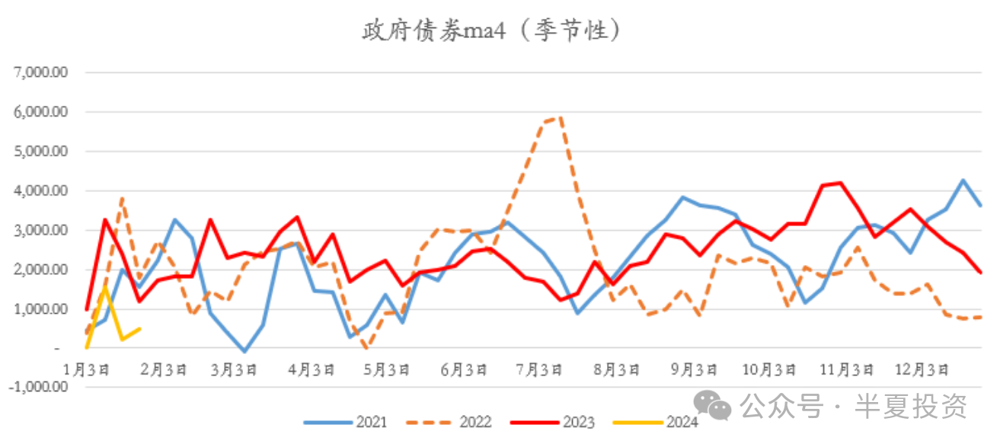
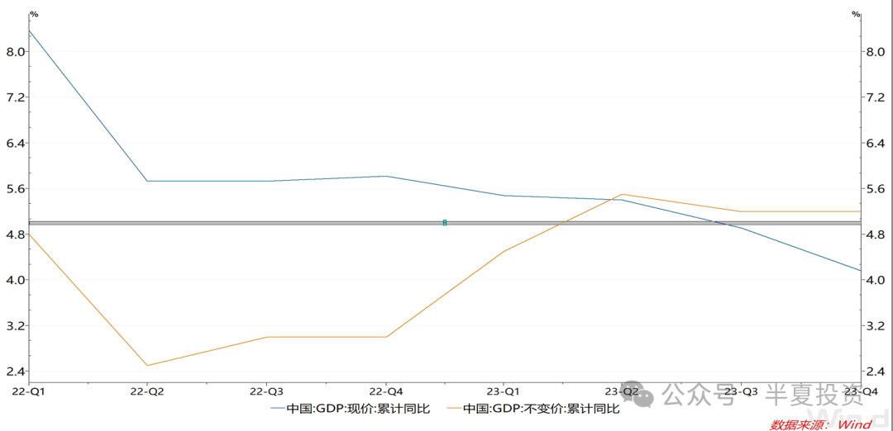
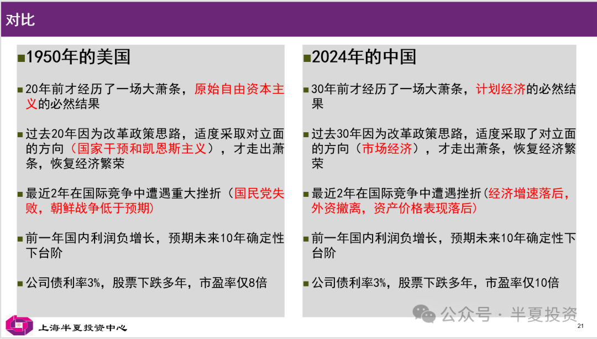
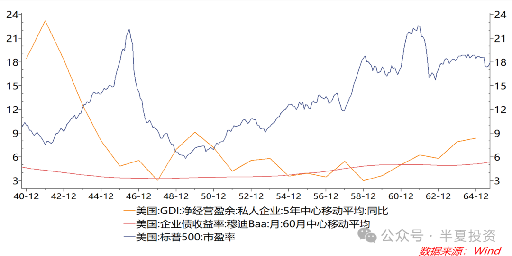
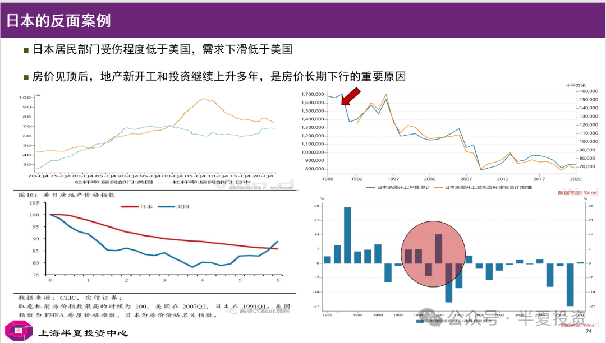

砥砺前行
目录
今天看了篇还不错的文章，转载整理一下。共勉之。
今年以来，市场的表现显著弱于我的预期。我们的净值也出现了下跌，半夏宏观对冲的今年的跌幅大于沪深300小于中证500，去年年中高点以来的最大回撤达到了25%。
我们也接到不少投资者的询问，我写了一封很长的致投资人的信。我的同事们建议我不要发出去，不要公开说话，私下逐一相应解释就好。说如果发了信，肯定会被媒体到处转载，肯定会被到处群嘲。但我想了一下，人有责任也应该有勇气承认和面对自己的错误。做错了就是做错了，被批评被群嘲也是正常的。我还是打算发出来，公开说明一下，清晰一些。也算帮同事们分担一些解释说明的工作量。
开年以来，无论经济还是市场的表现，宏观政策的力度，的确都低于我之前的预期。我过去几个月的确犯了速胜论的错误，不够谨慎不够耐心，对中短期政策的响应机制理解不够深刻。在看到右侧信号明确之前，我做好了打持久战的准备。首先是做好防守，保存实力。
我依然相信二十年一遇的牛市仍会到来，并且不会太远，但之前可能需要多等待若干个月或几个季度的底部震荡分化。
半夏的一位投资人，几天前通过同事，给我发了这样的一段话：
这么多年来以蓓总的功力，对宏观或经济形势的判断都是非常正确的，投资策略也是有效的，所以才会有过去多年持续良好的表现，但是从去年以来她的观点和市场表现出现了明显的不一致，我认为蓓总基本的思考逻辑并没有问题，问题在于她的分析忽略了一个非常重要的变量—政策或政治的因素，在市场经济的背景下，政策因素可以看做是一个常量，原来的分析逻辑以及得出的结论是没有问题的。但是近两年政策因素作为一个扰动变量发挥了很大的作用，如果忽略这个因素去分析市场和经济肯定会出现偏差，最终必然导致投资策略出现错误。
我这样看待市场并不代表我认为市场没有机会了，大方向和蓓总是一致的，我现在思考的是如何在现在市场环境的约束条件下，去寻找可能的机会。我自己公司的私募基金产品这两周正在发行，市场给了我们很好的建仓时机，希望我们能够抓住目前市场调整给予的建仓良机！
看起来这位投资人是一位同行，其实半夏有不少同行投资人，感谢大家曾经对我的信任。在我表现不好，出现较大回撤的时候，这位投资人及其它不少投资人，没有责备我，而是给予了理解，建议，甚至鼓励。我觉得非常感动，并略感羞愧。
关于这位投资人说到的政治和政策的因素，其实我并不是没有考量过。对于长期因素，无论是制度还是周期的，我都深入的分析过，研究了很多历史案例。对近期的变化，也一直有密切的跟踪。在此我也愿意跟大家分享一下我曾经的研究，和我现在的反思。
所谓的政治和政策因素对市场的影响，可以分两个方面来看：
-
长期的看，我们还有没有国运？我们的基本制度是否可以支撑长期持续增长？中国是否会失去20年？
-
中短期的看。宏观调控政策是否会在1-2个季度的范围内，托起名义经济增长（含广谱价格）和资产价格？
中短期的政策是否足以推动名义增长（含价格因素）上升 #
现在看，我的确是误判了。
我之所以在去年三季度以后转向乐观，正是看到了政策持续转向的趋势。
大的政策定调 #
7月28号的政治局会议态度较上半年明显变化，明确指出：要加强逆周期调节和政策储备。
对于地方债务问题 #
8月财新报导：央⾏或将设⽴应急流动性⾦融⼯具（SPV），由主要银⾏参与，通过这⼀⼯具给地⽅城投提供流动性，利率较低，期限较⻓。
后续，推出了1.5万亿特殊再融资债。
与此对应，重点区域，比如天津城投利率已经从7%下降到3%多。市场已经不再担心城投爆雷。
财政刺激方面 #
去年8月起，12个月滚动的财政赤字的确也开始回升。
10月24日，已经临到年底，人大常委会依然审议通过增加发行国债，将2023年的财政赤字率由3%提高到3.8%左右。体现了中央财政发力的态度。
地产方面 #
7月，国务院办公厅印发《关于在超大特大城市积极稳步推进城中村改造的指导意见》。
10月，住建部城中村改造信息系统入库城中村改造项目162个，总投资大于10万亿。
11月，彭博社报道，政府计划拿出至少1万亿政策性金融支持，投入城中村和保障房，最快本月发出。
央行推出了租赁住房贷款支持计划，支持地方政府收购存量商品房用作保障房，相当于定向QE消化地产库存。
在几乎所有的重要会议上，都强调三大工程是后续的工作重点。
基于以上这些对政策变化的持续跟踪，对政策储备的梳理和计算，去年4季度我的确是比较乐观的。
当时我认为：
既然从年中起已经有半年的准备，项目应该基本就绪，只等年底PSL的钱发出去，地方资金到位，拆迁就可以大面积展开，房票就可以批量发出，年初就能看到地产销售的回升。加上地方政府收购存量做保障房消化库存，房价2024年初就能企稳回升。
但最近1个月，尤其开年之后看，财政和货币政策的节奏，都有所回摆。而地产政策方面，之前计划的政策，无论实际落地的力度还是执行的速度，都显著的低于预期。
财政方面 #
11月总的政府债务融资（国债+地方债+政策性金融债+城投债）创出历史同期最高之后。12月环比下降。但今年一月以来，环比下降，甚至同比下降明显。

货币信贷政策方面 #
去年4季度后，银行间利率（回购，存单等）上台阶，货币开始变紧。虽然社融有所回升，但M2增速持续下行。
今年1月以来，信贷总量同比明显偏弱，并且央行似乎并不着急，央行的一些领导在一些场合交流，认为调结构防空转是更重要的。
加之总的政府债务融资1月也是同比下滑的，可预期1月社融增速大概率也会拐头向下。
地产政策方面 #
- PSL第1批发了3500亿，作为试点。目前为止大部分还没有落到项目上，只是先完成了第一步向国开行的到账。从各地地方政府调研的情况来看。政策性资金的使用受到的限制比预期的要多，落地的速度和效率比预期的要慢。相对于最早行业内讨论建议的方案，现在的方案既少了量，又带了枷锁。
- 租赁住房贷款，并没有立刻全国范围推开。而是选了8个城市做试点，首批一共1000亿额度，大部分仍在申请阶段。
从结果上来看，1月以来的地产销售又下了一个台阶。
为什么政策的节奏出现了回摆和收缩，现在我的理解，应该是政府和市场观测经济的侧重点的不同。
管理层看重实际增长指标，也就是工业产出，实际GDP这些数量指标，政府指定KPI的时候，也是以此类指标为根据。过去一年多实际，数量指标的确持续上行，超目标完成。
在上周的达沃斯会议上，总理说：
刚刚过去的2023年中国经济总体回升向好，预计国内生产总值增长5.2%左右，高于年初确定的5%左右的预期目标。在推动经济发展的过程中，我们坚持不搞强刺激，没有以积累长期风险为代价换取短期增长，而是着力增强内生发展动力。
而跟企业，居民的体感相关度更高的指标，资本市场更看重的指标，其实是名义增速（包括价格因素），过去一年多持续下行，最新仍在下行。
过去一年名义增速和实际增量，走势完全是劈叉的。

对于决策层来说，既然目标已经超计划完成，的确没有必要加大刺激力度，的确可以节奏上回摆一下，的确可以腾一些力量来调结构防空转控地方债务。而对于群众和市场来说，名义经济增速趋势仍在下行，期望的政策倒是落空了。
这种分裂，2，3个月内，暂时是无法逆转的。转变要到来，要么得是数量指标也出现明显的向下压力，要么是得价格指标触碰到红线，要么是价格波动引发一些不稳定因素。要么是决策层的关注点从数量指标转向价格指标。
之前的我，对这种分裂理解的确不够深刻。在去年4季度，基于对年底政策性金融确定性大发力的期待，还左侧买入了10%地产股和建材股，原计划开年看到房票大面积发出，地产销售回升再右侧加仓。结果是，年初观察了2周，发现城中村进度缓慢，地产销售再下台阶，然后止损。
我的确犯了速胜论的错误，不够谨慎耐心，这类进攻性的品种，应该等到右侧数据确认再买。
以现在的情况看，之前认为驱动中国股票牛市的2个理由：
- 名义GDP拐头，价格向上，估计还要等几个季度（最快1个季度，慢的话也许要3，4个季度）。
- 低利率，低信用利差，去非标化环境下的资产荒背景下，极度低估的股票资产有望吸引长期配置类资金，这一点依然成立。
那么，名义GDP拐头之前，市场能得到低估值和资产荒的支撑，难以大跌，但也难以进入牛市主升浪。在看到右侧信号明确之前，我决定先做好防守，保存实力，做好打持久战的准备。
去年年底我的组合由三部分组成：
进攻的地产股和地产链，中流砥柱的大盘宽基指数，防守的高股息类。
地产股和地产链：在地产销售回升，房价企稳之前，没有上行动力，不排除继续跌。这类持仓上周已经基本平仓止损绝大部分。等地产销售回升，房价企稳再重新买入。
300为主的大盘宽基指数：当前估值处于历史最低位附近，在持续有资金大量申购300ETF的背景下，下行风险有限。可以继续持有。
高股息类：红利指数PB仅0.6，PE仅5.5倍，分红收益率6.5%，绝对估值在历史上看依然很低。因为资产荒依然是今年的主要矛盾之一，保险依然将会是今年主要的净流入资金。即便名义经济增速不起来，高股息类今年应该仍能获得绝对收益。如果名义GDP回升，则高股息中的顺周期类也会贡献向上弹性。属于攻守兼备的品种。
在名义GDP拐头，地产企稳回升前，后续我们做好持久战的准备。一方面回撤更多之后的确需要进一步加强风险控制，一方面估计短期内没有大幅上涨的踏空风险，组合总的风险预算比之前降低一半。
权益方面保持大盘宽基指数+高股息类的结构，作为基础持仓。依然会持续跟踪，积极寻找一些商品类的机会，但也不能着急。大部分工业商品现在和未来2个月，都处于积累矛盾上下两难窄幅震荡的局面，但开春后可能会存在一些库存周期拐点的机会。
长期看依然不需要怀疑国运 #
虽然我过去3个季度看多中国做多中国亏了钱，虽然我已经战术性的减了仓，我只怪自己之前认知还不够。不打算抱怨国家责怪政府，也不会因此怀疑国运。中短周期的节奏和长期的前途不是一回事。
在历史的当期，当时的人们，当时的市场，其实常常会误判国运。
在某一年某一个国家，面临如下这些：
2，30年前，经历了一场经济大萧条，是其当时的经济制度的缺点导致的 过去2，30年因为改革经济制度，引入了曾经对立面的方向，才走出萧条恢复经济繁荣 在国际上有一个强大的竞争对手，这个竞争对手过去一段时间的经济表现突出 最近2年在国际竞争中遭遇挫折，在国际上被看衰 前一年国内利润负增长，预期过去10年的经济增长模式不能维持，后续10年经济增速会确定性下台阶 他的信用债利率温和下行，只有3%出头，但他的股票市场经历了长达好几年的熊市，核心指数从几年的20多倍PE，下跌到不到10倍PE
你可能会说，这不就是2024年的中国吗？
其实，这是1950年的美国。

1929年，自由放任资本主义的美国，美国经历了大萧条，经济持续负增长。
直到罗斯福上台，政府强力预经济。罗斯福很大程度采用了一些苏联式的计划手段，比如对工厂的产量进行指导和限制，比如曾经试图执行高于90%的边际税率。罗斯福当时被美国的精英阶层和富人仇视，但他拯救了美国。
美国走出了萧条，但经济增速依然无法与苏联相比。
1952年苏共十九大报告中公布的统计数字：1951 年苏联的工业产值比1929年增加了12.7 倍。同期的美国只增加了2倍，英国则增加了1.6倍，法国增加了1.04倍。
因为苏联之前30年在经济发展上长期持续的好业绩。在50年代，共产主义的思想是在全世界范围内流行的，包括美国。
去年上映了电影奥本海默。奥本海默本人因为被怀疑是共产主义分子而长期被调查。奥本海默本人可能的确不是共产党，但是他的前女友（一位精神病学家）和他的太太（一位生物学家），的确都是美国共产党员。也就是说，在那个时候，共产主义思想即便是在美国的精英阶层中也是颇受欢迎的，并不只是在底层劳工之中有市场。
为什么共产主义思想当时如此受欢迎，还不就是因为当年苏联的经济表现好吗？就好像为什么现在大家如此追捧美国，不就是因为美国的工资，股市，房市都连涨了十几年吗？
美国人当时本身对自己的制度就有怀疑和不自信。
二战期间，美国的企业盈利增速维持高位，股票市场还是保持了正常的繁荣。1945年二战胜利后，标普500指数的市盈率在20多倍pe。
但往后看但美国人开始面临一个中期直接的问题：
二战时对外卖军火卖物资的经济增长模式不能继续了，后续经济增速确定性会下一个台阶。
美国股市开始下跌。
1949年，美国在国际上遭遇重大挫折，在东亚最大的国家，它支持的国民党失败了，对方阵营胜利。
1950年，美国再次遭遇重大挫折，在朝鲜战场上，表现严重低于预期，没有打赢。
美国人对国运的怀疑进入了最高潮，美国股市的熊市进入了最低谷，1949-1950年，标普500指数平均只有8倍PE，最低点只有6倍。
而1950年之后，美国的企业利润增速并没有重新加速，而是如预期下台阶。但随着人们从恐慌中逐渐淡定下来，美国股市步入了长达10多年的重估牛市，PE从8倍上升到20多倍。

站在几十年后的现在，我们都知道：后来美国发生了什么，苏联发生了什么。
关于经济制度，我自己的思考是：
如果我们认为罗斯福新政之前的自由放任资本主义是纯黑，前苏联为代表的计划经济是纯白。其实现在除了极少数国家，世界上已经没有纯黑或者纯白的经济体制了，都是灰的。
这个灰就是国家干预下的市场经济，无论美国中国欧洲主要国家日韩都是这样，这种国家干预下的市场经济包含四大要素：
中央银行制度，大财政，产业政策，转移支付。
现在的美国，也干预利率和汇率，赤字率上台阶，也有产业政策比如补贴新能源，也会因为国家竞争限制企业正常的商业行为，比如限制英伟达的芯片出口中国，也会收富人的税补贴给穷人。
当代世界，大部分国家经济体制之间的差异，是左右幅度的差异，政策周期位置的差异，而不是黑和白的差异。当时的人们容易用过去一段时间的表现趋势外推国家的发展和制度的优劣，常常是会误判的。
如果抛掉对制度的偏见和怀疑，认可中国的经济制度基础本身没有问题，只是政策的方向和力度问题。那我们可以来讨论经济周期和发展阶段的问题。
中国基础设施完善，企业家和人民勤奋好学，因此制造业持续升级，相对于欧洲和日韩，在新能源汽车等新兴产业上优势明显。因此，中国的出口份额维持全球第一并且在过去的5年又上了两个台阶。因此，中国的经常项目顺差始终维持在非常高的水平。这是中国长期竞争力的基础，并没有动摇。
在经济发展阶段上，把我们跟日本对比：
中国的城镇化率相当于1965年的日本，人均GDP相当于1983年的日本，居民杠杆相当于1986年的日本。中国在这些方面都仍然有一段较长的上行空间可以继续。
对比美国和日本地产泡沫破灭的案例，美国3.5年后见底，日本房价下跌持续了10多年，供给端的差异其实能够解释价格后续表现的差异。在美国的案例中，供应端进行了迅速的大幅调整，新开工和投资都快速下行。而日本则不是。在地产泡沫破灭之后。日本的新开工和地产投资很快重新上行，92年到97年持续增长，一度创出了新高。正因为供应端没有调整，价格下跌才变得长期持续。

中国的案例显然更接近美国。如果看滚动12个月的住宅新开工，现在比高点已经下滑60%。再考虑到中国的经济发展阶段更接近日本的80年代初而不是90年代，中国的房地产市场显然是还有一段向上的路可以走的。我们不需要担心失去20年。
我们也可以比较欧洲的2011年。欧美在2008年同时遭遇了房地产市场的剧烈调整。政府收入的下行在三年之后引发了欧洲小国的财政危机，所谓的欧债危机。跟中国过去二年土地财政收入下滑，引发地方政府债务压力的情况其实是类似的。但那个时点事后看，其实也正是欧洲房价和股票指数的低点。后续欧洲无论房价还是股指都进入了长期牛市。
越是长期的问题，越不会因为几个季度的波动而改变。上面这些长期问题的答案其实是清晰的。无论过去半年股市是中国股市是不是下跌，无论过去半年半夏旗下基金的净值是不是回撤，其实都是不会改变的。我们不需要怀疑国运，投资人的确面临历史机遇。
最后的一段话 #
前面的投资人来信也提到，最近我们被媒体和自媒体热炒。因为上周半夏旗下有一支基金下跌到0.84，触及预警线。我自己本来觉得不是什么大事。2年前发行的基金，下跌10%多，放在行业里横比，算跌的相对少的吧？
预警线不是止损线，对到预警线的基金，我们有一套成熟的风控方案，在预警线和止损线之间，设置了5个分界线，净值下滑就梯形降低仓位系数，净值回升则对应的梯形提高。基本是不可能到止损线的。
媒体喜欢写我，我也习惯了，并表示理解。虽然有一半是黑我，其实也有一半是认可。在媒体领域，流量，是一部分人工作的KPI，是一部分人生活开销的来源。大部分媒体人，其实收入都不高。如果我帮一些人完成了KPI，帮一些人提供了生活来源，也算积德吧。
但是一些媒体夸大事实，造谣说我们爆仓，穿仓，这显然就是违法行为了。半夏法务的同事正在逐一投诉，对部分过分的进行起诉。
半夏宏观对冲主基金没有预警线和止损线，从最高点回撤25%，的确是我历史上的最大回撤。对此，我也有心理准备。
10多年前我就下定决心将投资作为自己终身的职业，因此，我也研究过世界上大部分存续20年以上的投资大师的历史业绩。他们的历史最大回撤无一例外超过20%，甚至超过30%，40%，50%。金融危机平均10年一遇，多周期共振的调整大致是20年一遇。现在中国就处于这种多周期共振的环境，官方说法是百年未遇之大变局。
这么说不是想给自己找借口开脱。过去3个季度，我做得的确不好，如果一些投资人责备我，不再信任我，我也完全理解。
我自己早就想过，我既然要干一辈子的投资，无论因为环境的原因，还是因为自己阶段性运气的原因，肯定会遇到2~3次百分之20以上的回撤。肯定会有若干次失去一部分人投资人的信任，若干次基金规模的显著萎缩。对此我自己有三个风控措施：
- 在个人的财务安排上。没有任何的负债。大部分资产都放在基金里，但依然给自己和家人留有一笔现金，足够按当前的生活水平开销20年。
- 在基金投资上。我给自己设了一个内部风控目标，回撤15%。要求在15%之后显著压低风险预算的上限，给自己一个硬枷锁以免完全失控。这个枷锁并不能保证之后完全不跌，但是至少显著控制了速度。
- 在公司业务发展上。顺风的时候，不激进扩大规模，不在高点主动营销，不过快的扩大团队人数。规模每上一个台阶就主动封盘，巩固运营和投研。事实上去年4月我们的确刚到一个台阶就主动封盘了。
做好了这样的安排，肯定就能一直在市场里活着。就没什么好焦虑的，不用扭曲自己的策略和动作，客观评估环境，正常调整仓位。
对于投资人来说，无论你是投半夏还是投别的基金，其实也应该做好类似我这样的思想准备。非固收的净值型基金，20%以上级别的回撤长期看几乎是不可避免的。比如前两年表现很好的量化选股和杠杆量化中性基金，我觉得今年可能就需要很当心了。
最后，我想对所有喜欢我，认可我，关心我，最近担心我状态的人说，谢谢大家关心鼓励，你们真的不用担心，我好好的，一直都会好好的。我经历过08年金融危机，经历过15年股灾。第一次合伙创业失败过，不仅散了伙，还分了家。我每个月被媒体写，每年都会被黑好几次。我什么没经历过呢？
我会纠错和止损，会持续学习和进步，但我从来不怀疑自己，我喜欢这个工作，一直相信自己在长期会实现好的投资业绩，一直相信自己会是中国最优秀的投资人之一，不会因3个季度的回撤改变，我会用未来几十年证明这一点。
文章转载自：准备好打持久战，但依然不怀疑国运